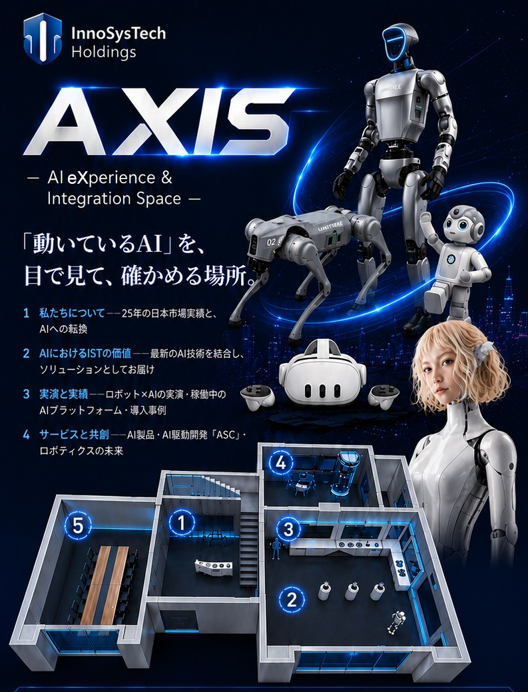
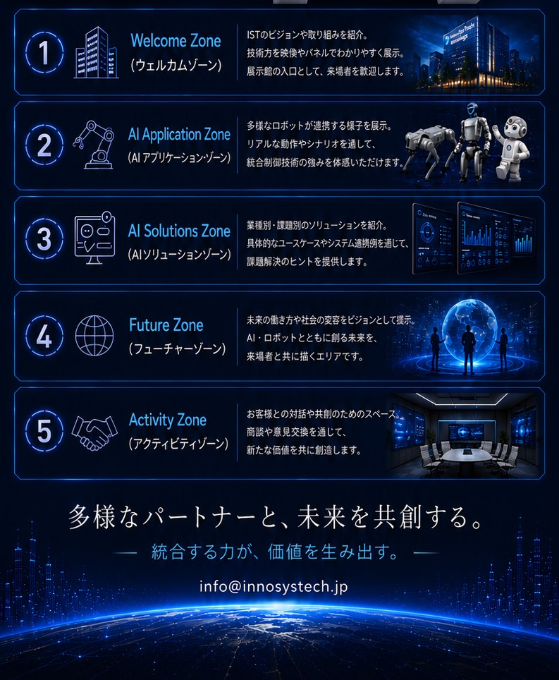

| 企業名 | 国 | 業種 | AI 活用内容・効果 | 出典 |
|---|---|---|---|---|
| OpenAI | 🇺🇸 | ヘルスケア／AIアシスタント | ChatGPT ヘルスケア の提供を開始。Apple ヘルスケア・One Medical・Function Health 等と連携し、検査結果の経時比較や生活習慣との関連分析を会話で実行。連携データはモデル学習・広告に 不使用・暗号化される。 | OpenAI 公式（7/22） |
| Samsung | 🇰🇷 | AIアイウェア／ウェアラブル | Galaxy Unpacked（ロンドン）でディスプレイ非搭載の AIアイウェア を発表。Snapdragon AR1 Gen1・Google Gemini（Android XR）を搭載し、メッセージ要約・リアルタイム翻訳・会議撮影をハンズフリーで実現。 | Samsung Newsroom（7/22） |
| LimX Dynamics（逐際動力） | 🇨🇳 | ヒューマノイド／ロボットOS | ヒューマノイド向けエージェントOS COSA 0.5 を発表。全身型ヒューマノイド「Oli」が家庭内の家事を遠隔操作なしで自律完了。あわせて 約2億ドル のPre-IPO調達を実施し、企業評価額は 約20億ドル に達した。 | Humanoid Guide（7/17） |
| Tencent 元宝 × JD.com | 🇨🇳 | EC／AIアシスタント | JD.com のAIエージェントが Tencent のAIアシスタント 元宝（Yuanbao） と統合。商品検索から注文・決済まで アプリ切替不要 で完結し、自然言語での発注に対応。検索型から 会話型ショッピング への転換点。 | AIBase（7/15） |
| キングソフト（Kingsoft Office／WPS） | 🇨🇳 | オフィスソフト／AI | 個人向け 霊犀（Lingxi）専門版 と組織向け WPS Comate を同時発表。前者は編集可能なPPT・表・文書を 直接生成、後者はWPS 365に「企業の頭脳」を実装し データを社外に持ち出さない 監査体制を備える。 | 新華網（7/17） |

